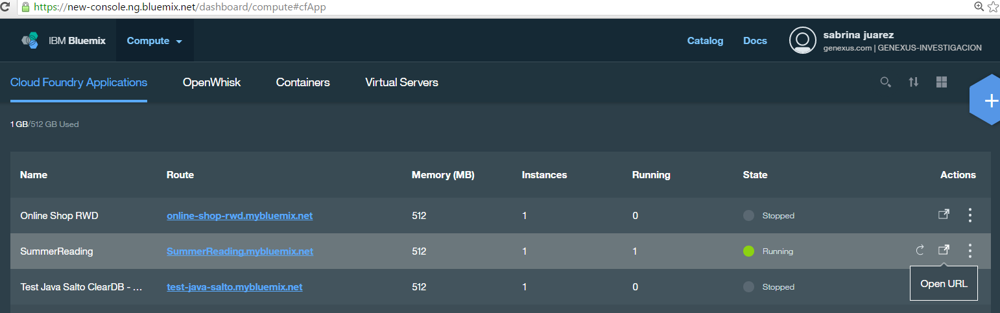

How to deploy an application to IBM Cloud
Using the Deploy Applications tool, it is possible to run Java applications on IBM Cloud. Prerequisites:First, you should have defined a Cloud Foundry app using the IBM Cloud console. See Deploying to IBM Cloud prerequisites for detailed information on this topic. Steps to deploy to IBM Cloud
After selecting the main objects and configuring the necessary properties for the automatic deployment, press the Deploy button. It will build the WAR package, as well as upload and deploy it in IBM Cloud. You'll see an output similar to the following: API endpoint: https://api.ng.bluemix.net (API version: 2.54.0) User: sjuarez@genexus.com Org: genexus.com Space: GENEXUS-INVESTIGACION Deploy: cf push SummerReading -b liberty-for-java -p C:\Models\SummerReading2\SummerReading2\Deploy\JavaMySQL013\Bluemix\20160826102928\..\SummerReading2_20160826102928.war Updating app SummerReading in org genexus.com / space GENEXUS-INVESTIGACION as sjuarez@genexus.com... OK Uploading SummerReading... Done uploading Stopping app SummerReading in org genexus.com / space GENEXUS-INVESTIGACION as sjuarez@genexus.com... OK Starting app SummerReading in org genexus.com / space GENEXUS-INVESTIGACION as sjuarez@genexus.com... -----> Downloaded app package (21M) -----> Downloaded app buildpack cache (336K) You can check the Application URL, Status and Configuration from the IBM Cloud console. For example, the URL could be: https://summerreading.mybluemix.net/servlet/com.summerreading2.patternconsole.mainconsolepanel.  If you've selected the "Only Package" checkbox, the war is copied to the local file system, from where you can deploy it manually to IBM Cloud. Additional information:Read here for monitoring a java application on IBM Cloud, with JMX. (*) IBM Cloud was formerly known as IBM Bluemix
|

| Backlinks | |||
| Toc:Application Deployment tool | |||
| Application property | Deploy Application Targets | ||
| IBM Password property | IBM User property | Organization property | Space property |